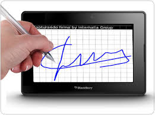

by V.A.C.A SENA CEET
Es el único medio que permite garantizar técnica y legalmente la identidad de una persona en Internet. Se trata de un requisito indispensable para que las instituciones puedan ofrecer servicios seguros a través de Internet; garantizando que únicamente él puede acceder a su información personal, evitando suplantaciones. También es el elemento usado para firmar electrónicamente solicitudes o documentos.
Basada en un certificado digital, como los utilizados en la administración, tiene la misma validez jurídica que la firma manuscrita. Asi mismo, la identificación basada en un certificado digital es equivalente a la presentación del DNI en la atención presencial.
La base legal de la Firma electrónica está recogida en la Ley 59/2003 de Firma Electrónica y se desarrolla en más profundidad en la sección Base legal de las Firmas. La sección también explora, bajo qué circunstancias la ley equipara la firma electrónica a la firma manuscrita
 Estos equipos van desde Tabletas, Celulares, token, USB con software de encripción, los cuáles son conocidos en el mercado. En el caso de los Token y USB, solo son funcionales bajo sistema operativ desde la versión Windows XP a Windows 7 claro que puede cambiar de acuerdo a la empresa que presta el servicio, lo que puede hacer cambiar la version del S.O.
Si desea información adicional por favor envie su email, para poder contactarnos....